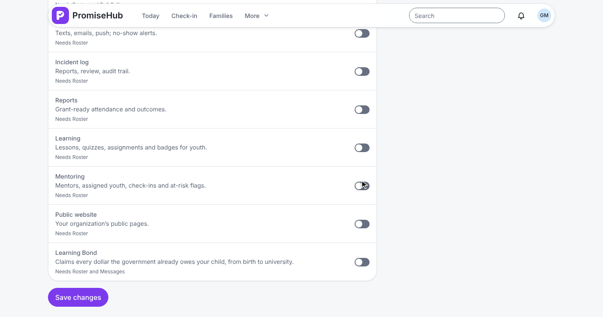
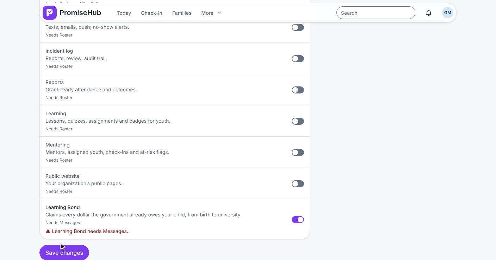
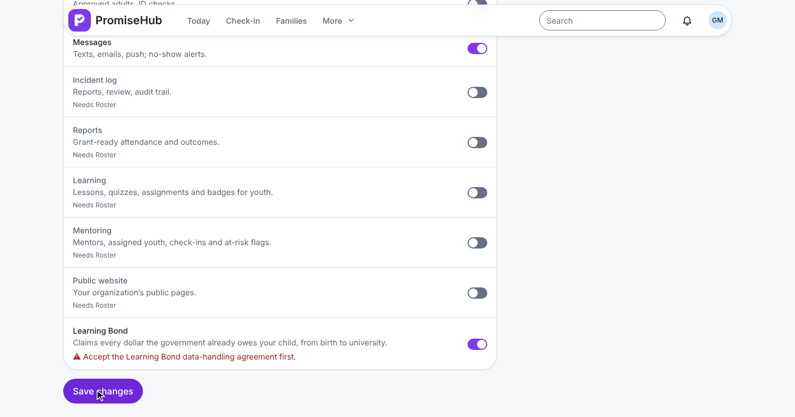
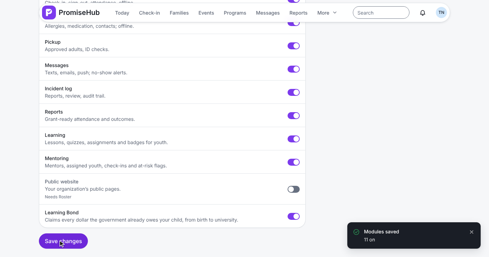
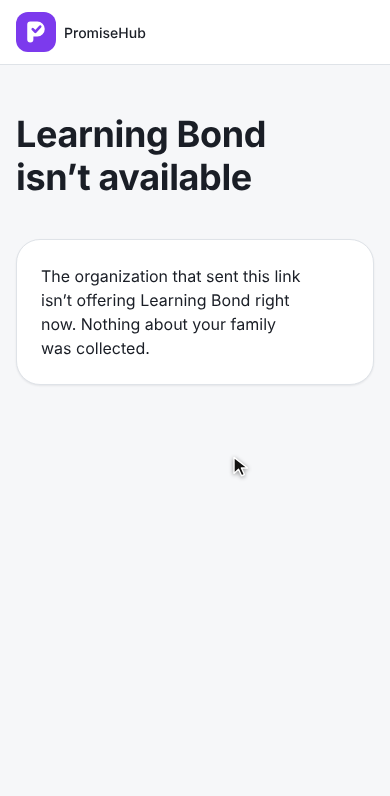
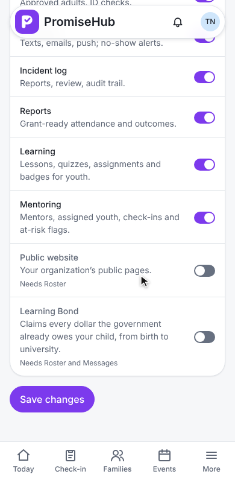
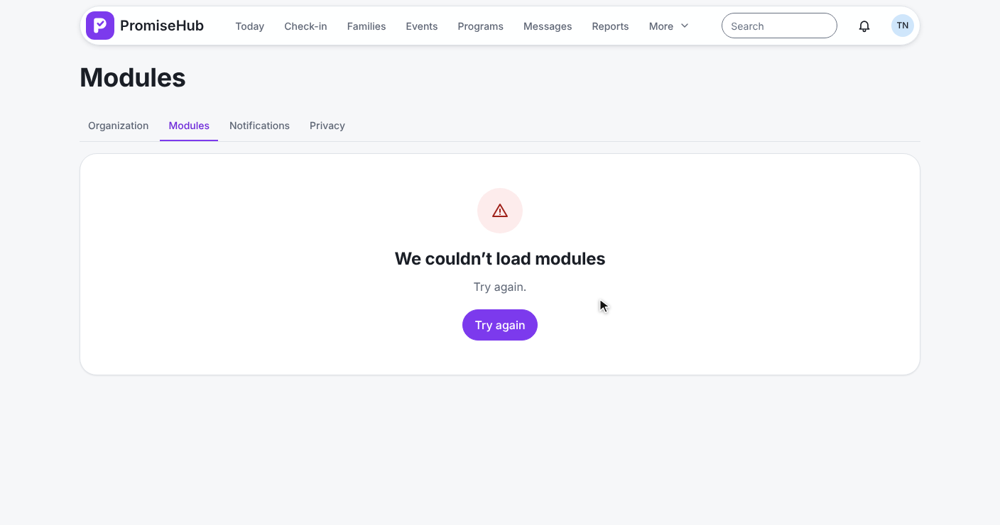
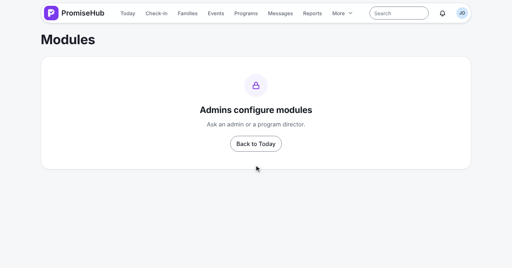

PromiseHub · Video 82
Learning Bond safeguards
The module gate, the encrypted store and the audit, built before the first Learning Bond screen
The module gate, the encrypted store and the audit, built before the first Learning Bond screen
ADR 0076 · L2-135 · L2-159 · L2-161 · L2-162

ModuleId.LearningBond · ModuleCatalog.Needs → [Roster, Messages] · not in any preset
Grace at Northgate: Messages, then the agreement.


PUT /settings/modules → 422 · ModuleRules · LearningBondAgreementGate in SaveModulesHandler
Tom at Harbourview, agreement version 2 accepted.

Off hides, never deletes · back on needs no new acceptance · a new version does not switch it off
/learning-bond sends Grace to Today.
LearningBondEndpoints: /learning-bond with RequireModule(ModuleId.LearningBond) → 404moduleRoute('learning-bond', 'LearningBond', …): redirect to Todayfrontend/projects/learning-bond/ loaded only while the session has it onL2-005 · L2-162 criteria 3 and 7
Carmen opens a link while the module is off.

GET /g/learning-bond/{token}: organization from the link, then the moduleLearningBondUnavailablePage names no organizationEncryptedSin: Ciphertext and Last3; Masked is its only stringLearningBondCipher: AES-256-GCM under LearningBond:Key, outside the databaseSocialInsuranceNumber.Normalize: nine digits and a check digit, never echoedL2-159 criteria 1, 2, 6, 7 and 8
The last three digits are all anyone ever sees
LearningBondIntakes: GuardianSinCiphertext · GuardianSinLast3
LearningBondSinDestroyer: ciphertext gone, last three digits keptL2-159 criterion 4 · L2-161 criteria 3 and 4
Each module with what it needs.



LearningBondModuleTests: needs, agreement, staff and guardian doors, a second organization, audit searchLearningBondAuditTests: a known test SIN in no log line; entries per organizationLearningBondCipherTests, LearningBondSinStorageTests: round trip, mask, tampering, no key, destructione2e/tests/learning-bond/module-gate.spec.ts: laptop and phone, axe, fake API
Next: Tom accepts the agreement and chooses coverage